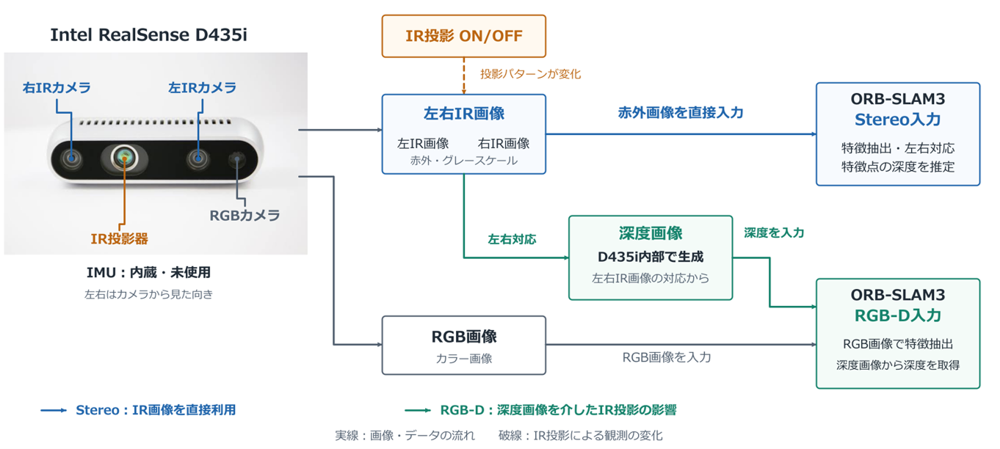

RGB-D・ステレオカメラを用いた Visual SLAM の自己位置推定精度と安定性の評価
Evaluation of Localization Accuracy and Stability in Visual SLAM Using RGB-D and Stereo Cameras
担当：索 天章
キーワード：
Visual SLAM／RGB-D カメラ／ステレオカメラ／ORB-SLAM3／自己位置推定／特徴点マッチング／移動ロボット
はじめに
移動ロボットが自分で動き回るには，「自分が今どこにいるか」を知る必要があります．屋外では GPS で位置を知ることができます．しかし屋内では GPS の電波が届かないため，GPS を使えません．
もし GPS が使えない屋内でも，移動ロボットがカメラの画像から安定して自己位置を推定できれば，自律移動が可能になります．将来的には，物流，設備点検，災害対応などへの応用が期待できます．
カメラ画像からの位置推定：Visual SLAM
本研究では，Visual SLAM（Simultaneous Localization and Mapping）に取り組んでいます．Visual SLAM は，カメラの画像をもとに，カメラ（ロボット）の位置の推定と，周りの地図づくりを同時に行う技術です．まず，画像の中から，物の角や模様など目印になりやすい点（特徴点）を見つけます．次に，画像どうしで同じ特徴点を対応付けます．そして，特徴点の見え方の変化から，カメラがどう動いたかを計算し，自己位置を推定します．
本研究では，Intel RealSense D435i という1台のカメラで，2種類の入力を比べます．ステレオカメラは，左右2つの赤外線（IR）カメラの画像から，人の両目と同じしくみで奥行きを求めます．RGB-D カメラは，カラー画像（RGB）と，各画素までの距離を表す深度画像を組にして使います．D435i の深度画像は，左右の IR 画像の対応から，カメラの内部で作られます．また D435i には，赤外線の模様を投影する IR 投影器があり，投影のオン・オフで IR 画像の見え方が変わります．

研究内容
本研究では，カメラの撮影条件，特に赤外線投光の有無が，Visual SLAM の自己位置推定の精度と安定性に与える影響を明らかにすることを目的としています．本研究は，大きく4つの段階で行います．
- 画像の取得：D435i カメラで，RGB-D 画像とステレオ画像を撮影します．
- 自己位置の推定：撮影した画像を，公開されている Visual SLAM のソフトウェア ORB-SLAM3 に入力します．そして，カメラの自己位置と，移動した道のり（移動軌跡）を推定します．
- 誤差の評価：実際の位置を表す正解データ（Ground Truth）と SLAM の推定結果を比べ，誤差を評価します．
- 比較と分析：条件による結果の違いを比べ，分析します．